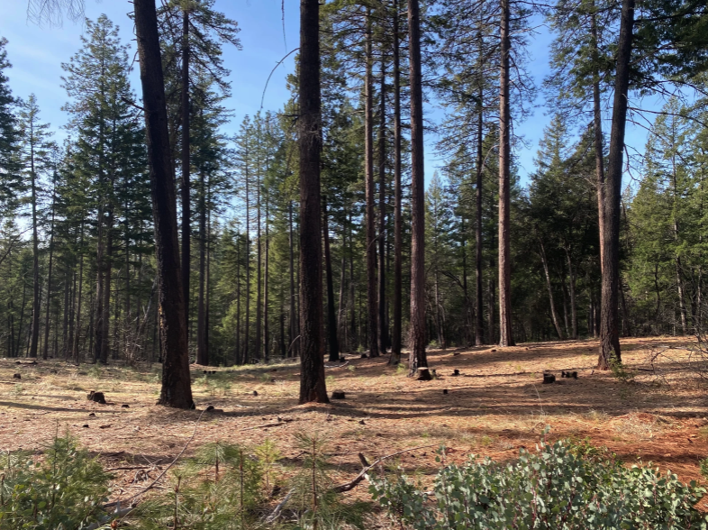
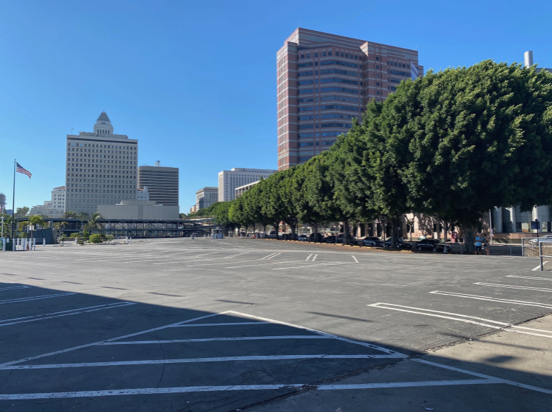

It seems like everyone owns a chainsaw and a pair of heavy logger boots in Trinity County. Forestry, whether it’s for extracting timber or conservation, runs deep here. Through GrizzlyCorps, I’ve been working with the Trinity County Resource Conservation District on forest management, wildfire prevention, and promoting education and recreation. Trinity County’s land ownership represents a grid of federal, industrial timber, and private lands overlaid on remote, mountainous terrain. The county’s streak of fierce self-reliance and a responsibility to the natural world first began with the stewardship of indigenous groups and then colonial settlers who came for mining and later stayed for logging. Being immersed in ecological forest stewardship has been incredibly interesting and rewarding, but my clean shave and lack of camouflage clothing still belie my city upbringing.
I grew up in Los Angeles and decided to study urban planning at the University of Southern California once I began to notice all of the urban-centric problems plaguing Angelenos rear their ugly heads. Underpinning the city’s network of freeways and major arterial streets is an insidious history of redlining Black and Latinx neighborhoods in the first half of the 20th century, financially destabilizing previously thriving ethnic enclaves. Erasing history and livelihoods, the city capitalized on the instability and poured 8 lanes of asphalt, the paved lines the mark of a pyrrhic victory that doesn’t function all too well (traffic in LA is just as bad as you think it is). The downward spiral caused by redlining carried a myriad of detrimental effects for affected communities, with factors related to public health, financial stability, and quality of public education deteriorating. Shown on a map, they resemble a gradient of general well-being thinning towards freeways and Black and Latinx communities. On the street, the most obvious effect is in the lack of tree cover.
During my senior year of college, I worked on the Urban Trees Initiative, a collaboration between USC and the City of Los Angeles to increase street tree cover in environmentally-disadvantaged communities. I love camping and backpacking and have hugged a tree once or twice, but I knew absolutely nothing about forestry. I was surprised to hear that the city has an Urban Forestry Division, and even more surprised to learn that Los Angeles boasts the nation’s largest urban forest, comprising 700,000 trees in public areas. Our work involved taking into account factors like carbon sequestration capacity, shade cover, air quality, existing tree cover, and block-level environmental inequity to provide a list of recommended tree species and planting locations to the city. I became enamored with the role that an urban forest plays in larger urban systems and the drive to promote environmental justice in areas where tree cover percentage measures in the single digits (wealthier suburbs of Los Angeles feature tree cover percentages of 20-40%).
Now, with 6 months of experience in more foresty forestry, as I like to call it, I’ve built a strong enough base to draw comparisons and identify stark differences between forestry in Los Angeles and Trinity County. Perhaps the most glaring difference is in what defines a forest and marks boundaries in the two areas. The 700,000 trees that make up LA’s urban forest are carefully planned and planted in parks or rectangular cut-outs in the sidewalks. They are most often found in rows on streets or on the edges of parks reserved for sports or other more “functional” uses. That the city considers the sum total of all the trees it maintains to be its urban forest ostensibly determines the boundaries of LA’s urban forest to be the municipality’s boundaries. Not included in the total number of trees in LA’s forest are those on private property, which vastly outnumber trees on streets or in parks. The city’s urban forest features distinct boundaries, both politically and ecologically. Walk from the sidewalk into your front yard, and you’re out of the urban forest. Enter into a large, treeless, area like the parking lot of Dodger Stadium, and the few ecological interactions amongst the city’s trees and wildlife all but cease. In such a controlled and manicured environment, the city’s forest is simple to define. By contrast, Trinity County’s political or administrative forest boundaries fail to define a forest that more closely follows blurred ecological edges. The Shasta-Trinity National Forest, right in our backyard, only had its hard, superimposed edges written into existence by the U.S. Forest Service in 1954. Within those boundaries and around those edges occur disturbances such as development or logging, which may impede but fail to completely stop interactions like wildfire or birds carrying seeds. In effect, forests in Trinity County are much more difficult to define through the anthropocentric framework in which forestry typically operates. Lines might be placed on a map, designating a national forest or vegetation classifications, but they don’t depict the complex, amorphous web of ecological relationships that LA’s urban forest seems to mute.

A comforting similarity between LA's urban forest and Trinity County's forests is the mad rush to undo past mistakes through more calculated management. Only in the last few decades have problems stemming from years of mismanagement in Los Angeles and Trinity County begun to be addressed. While the City of Stars' palm trees are iconic, the majority of them originated from a boost to the city's aesthetics around a century ago. Nearing the end of their lifespan, the palm trees are dying in droves to fungus and beetles. Another prominent tree lining the streets of Los Angeles is the Indian Laurel Fig, the famed sidewalk destroyer. The tough, woody roots of this tree tend to grow thick and lateral, cracking concrete and pavement in the process. The bane of my existence, I have found myself the subject of many a high school physics equation as my skateboard catches on uneven pavement and mass times velocity prompts my forward momentum. Neither of these trees are native to Los Angeles, aligning with a theme present in the around 1,000 distinct tree species in the city's urban forest. LA, and other urban areas, benefit from being in the interesting position of having so greatly altered the native landscape. In the face of a changing climate, without an abundance of native trees to consider, Los Angeles is pledging to plant trees adapted to drier climates in the Mediterranean or South America to conserve water and ensure their survivability. Straying from aesthetics as a priority, the list of ideal candidates also prioritizes shade cover, to mitigate urban heat island effect, and carbon sequestration, to combat poor air quality. In Trinity County, the renewed drive to restore and conserve native forests is very much alive. Years of fire suppression, beginning with outlawing indigenous groups from tending hunting and forage grounds with controlled burns, have come to a head, with incredibly dense forests lending fuel to California's megafires. Conversations around forest management almost always feature pleas to restore good fire to the landscape. The prevalence of prescribed burning as a tool for forest management has increased greatly in the last few years. What began as carefully burning piles of stacked fuel has turned into the ability to burn acres of understory brush and ground fuels to promote forest health and reduce fuels during wildfire season. Indigenous prescribed fire training exchanges offer opportunities for both non-tribal and tribal members to further traditional ecological knowledge and promote good fire. Prescribed Burn Associations, mutual assistance networks of neighbors who burn on private land, are being created and propped up by nonprofits and governmental organizations. The acrid smell of winter smoke acts as a sharp reminder of the beneficial work that many individuals, tribes, and organizations conduct for forest management in Trinity County.

Despite being completely out of my element, it has been an absolute pleasure to dive into two diametrically opposed worlds united under the same field. Whether I return to a city or stay in a rural area, lessons learned about management, cultural significance, and ecology in each can only serve to benefit me. For now, my low-top Converse sit unused in favor of my logger boots.
original post: https://www.grizzlycorps.org/post/a-city-slicker-s-observations-on-more-foresty-forestry